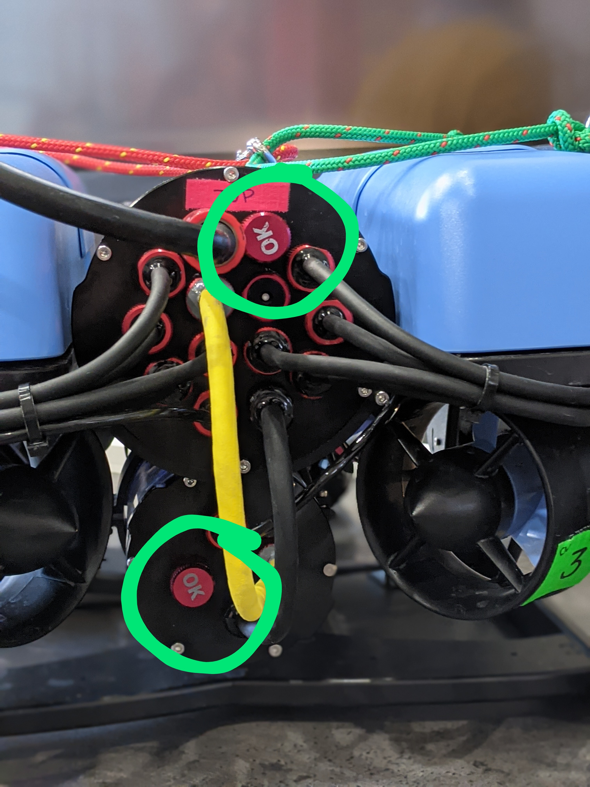
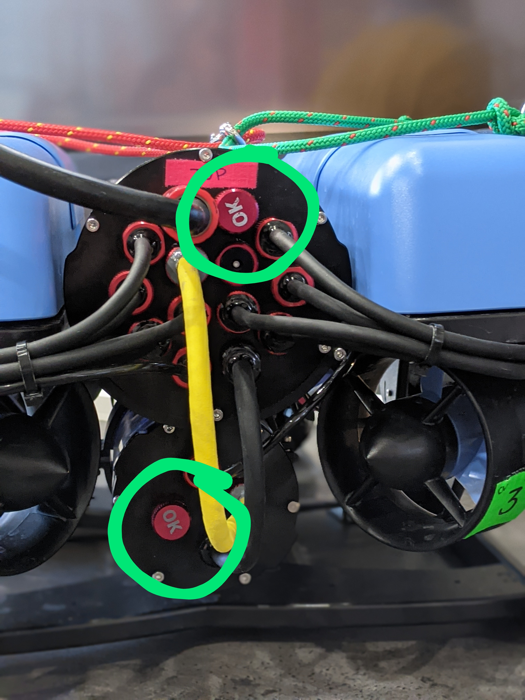

Lab Workflow
Time for experiments!

Checklist
The following steps can be prepared at home before coming to the lab.
Set the
ROS_MASTER_URIandROS_HOSTNAMEenvironment variables in~/.bashrc. You can have both configurations, for your simulation setup and your experiment setup and comment out the one you are not using with#.export ROS_HOSTNAME="$(hostname --short).local" # Your simulation/home setup export ROS_MASTER_URI="http://$(hostname --short).local:11311" # Your realworld/lab setup #ROS_MASTER_URI="http://hippo-celsius.local:11311"
export ROS_HOSTNAME="$(hostname --short).local" # Your simulation/home setup #export ROS_MASTER_URI="http://$(hostname --short).local:11311" # Your realworld/lab setup export ROS_MASTER_URI="http://hippo-celsius.local:11311"
Note
As always, run
source ~/.bashrcto apply these changes.Make sure you do not arm the vehicle. In the lab we will arm the vehicle manually for you. If your
bluerov_simis up-to-date, there is a dedicatedauto_arm_nodein~/fav/catkin_ws/src/bluerov_sim/nodes. If that is the case, you do not need to worry about anything as the vehicle only gets auto-armed in the simulation. Otherwise please update thebluerov_simpackage.Adapt your launch setup so that gazebo will not be started. We do not need gazebo since we are working with the real robot. Either change your launchfile you used for the simulation or (recommended) create a modified copy. For example, you could create a
keyboard_control_sim.launchand akeyboard_control_lab.launchin your depth controller package. The highlighted lines are removed for the lab setup.<launch> <arg name="vehicle_name" default="bluerov" /> <include file="$(find bluerov_sim)/launch/gazebo_base.launch" /> <group ns="$(arg vehicle_name)"> <include file="$(find bluerov_sim)/launch/spawn_vehicle.launch"> <arg name="z" value="-0.2" /> </include> <node name="keyboard" pkg="bluerov_sim" type="keyboard_control.py" output="screen" /> <node name="mixer" pkg="bluerov_sim" type="mixer.py" /> </group> </launch>
<launch> <arg name="vehicle_name" default="bluerov" /> <group ns="$(arg vehicle_name)"> <node name="keyboard" pkg="bluerov_sim" type="keyboard_control.py" output="screen" /> <node name="mixer" pkg="bluerov_sim" type="mixer.py" /> </group> </launch>
It’s best if one of you brings a fully prepared software setup on your own laptop. The real experiment will take less computing power since you are not running the simulation environment. If you cannot do this, let us know in time and we will prepare a laptop for you to use.
The setup can include a prepared settings file for
rqt_multiplot.
At the Lab
The first time you’re at the lab, we will give you an overview of the robot and its sensors. We will take care of connecting the battery and starting all ROS nodes and software running on the vehicle. Additionally, we will also arm the vehicle for you (once it’s in the water).
Before lifting the BlueROV into the water, we will do a vaccuum test together. After the test, do not forget to close the vents!
 

Vaccuum test and vent caps saying “OK”.
To test the network setup, open two terminals to publish and echo ROS topics.
rostopic pub -r 1 /test std_msgs/String "hello from laptop"
rostopic echo /testWe will prepare an equivalent setup on our machine. If you receive our messages saying “hello from celsius” and we receive messages saying “hello from laptop”, everything is fine.
We have a big TV screen at the lab. You can use it (we have HDMI and DisplayPort) for plotting data etc. so that everyone can see.
If you record data via
rosbag, do not include camera images (or if you need camera data, include just one topic). Camera images can overload the network. You can exclude topics matching regular expressions with-x. For examplerosbag record -a -x "(.*)camera(.*)"should exclude all topics containing
camera.And after all, if nothing is working, a few debugging tips:
check the node graph to see if everything is connected (in the correct way)
check the topic monitor (Is the data plausible?)
check the debug messages published (of course you have prepared some :) )
ask us to check our setup (we make mistakes, too)
{kind=link}
Note
Feel free to ask questions at any time! Let us know if you need any equipment (measuring tape, scale, weights, stick, …). If you’re looking for something we might not have at hand immediately, please ask beforehand.